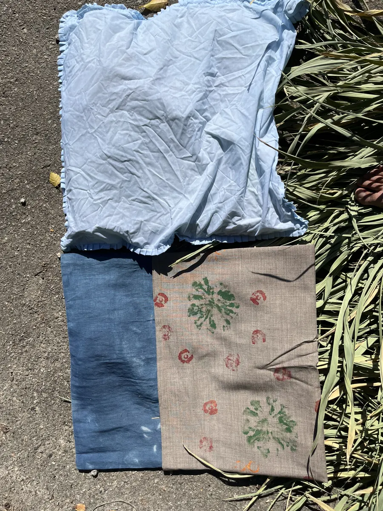
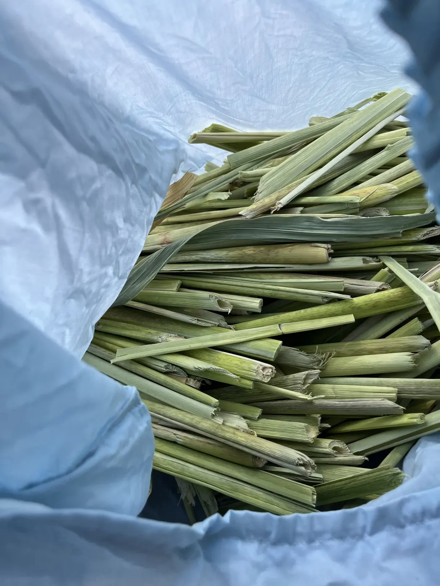
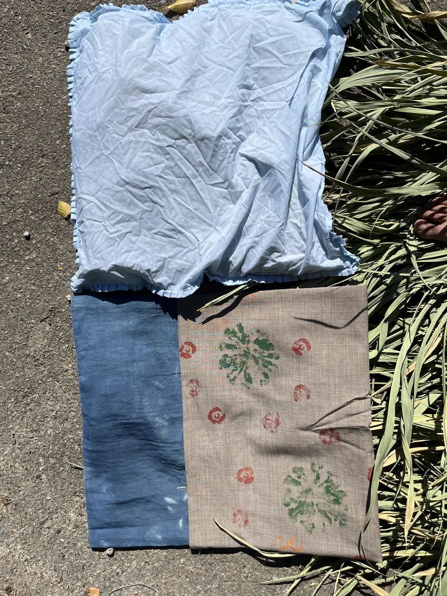
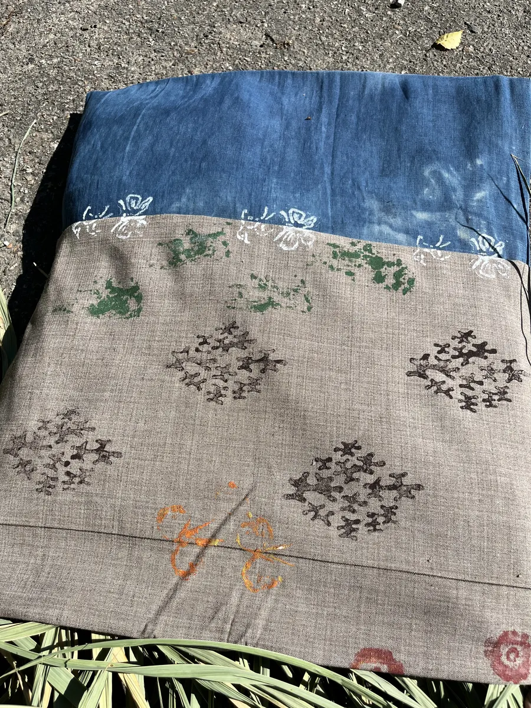

真菰の
昼寝道具
小院瀬見で採った真菰を、枕の詰め物、五本の縄を束ねた敷物、足に合わせて組む草履へ加工しました。一株のなかの硬さや太さの違いを、身体を休める三つの道具へ使い分けています。

- Year
- 2025年10月24日
- Location
- 小院瀬見 × 釧路
- Materials
- 真菰、クサギ染のポリ綿、座布団生地
- Techniques
- 縄ない、草履組み、草木染、縫製、3Dプリント
- Role
- 採取、素材実験、染色、設計、制作



01 — 出発点
小院瀬見で採取した真菰を、飾りや素材サンプルではなく、身体が実際に触れる道具へ使うことから始めました。昼寝という短い休息に必要な、頭を支える硬さ、身体を受ける面、素足の感触を一つの素材から作り分けています。
02 — 素材の選択
枕には、茎の根元から約20cmにある硬い部位を選びました。葉先なら弾力と反発が出ますが、今回は沈み込みより安定を優先しています。カバーにはポリ綿をクサギで染めた布を使用し、釧路で作った座布団生地へ、3Dプリントした朽木型のスタンプを加えました。
03 — 作り方
敷物は、藁より太く硬い真菰を縄に綯い、五本を束ねて身体を受ける幅にしました。草履は同じ縄を足に合わせて組み、寸法表ではなく、作りながら足を置いて形を決めています。
素材の香り、肌へ当たる硬さ、床に落ちる影までを、形を決める条件として扱いました。
04 — 次の課題
乾燥による縮み、繰り返し荷重で縄がほどける箇所、クサギ染の退色を継続して観察します。工芸技法の再現ではなく、採った場所、使う季節、身体の使い方から寸法を決める道具として更新していきます。